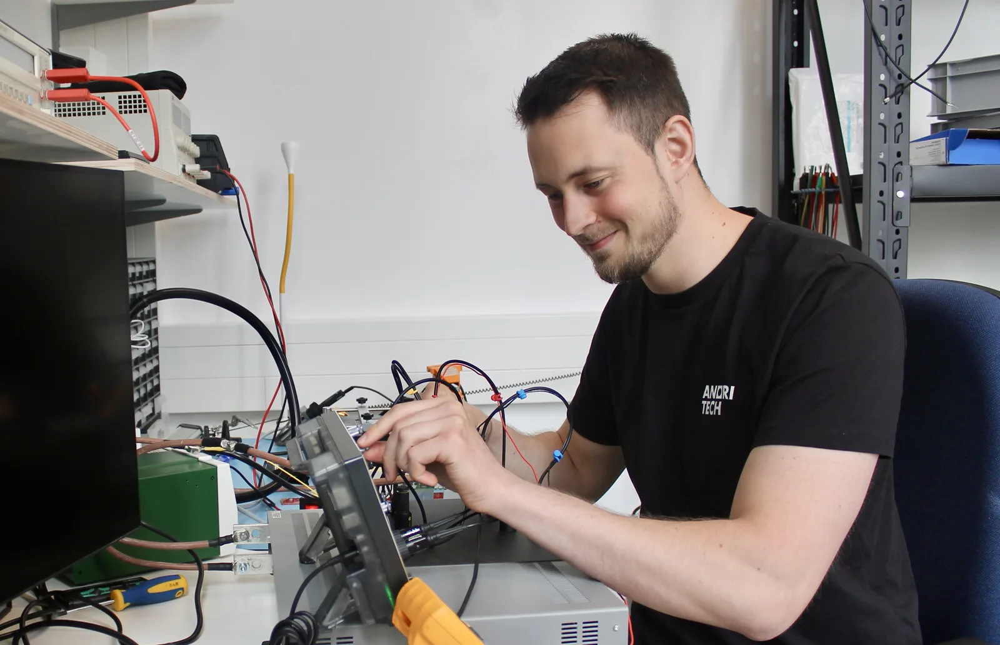

Ihr Weg zum BMS
BMS konfigurieren
Der Konfigurator wird gerade gebaut. Bis er live ist, konfigurieren wir Ihr BMS gemeinsam mit Ihnen, persönlich.
Eine Mail oder ein Anruf mit Zellchemie, Systemspannung, Stromstärke und Anwendung reicht.
Direkt zum Gründerteam in Hamburg. Kein Formular, keine Anmeldung, kein langer Salesfunnel.

Direkter Draht
Zwei Wege zu uns.
Schreiben
team@anoritech.com
Antwort am selben Werktag. Wenn Sie schon eine Anforderungsliste haben, hängen Sie sie einfach an.
Anrufen
+49 151 6701 1710
Sie erreichen direkt das Gründerteam, keine Zentrale.
Sie sprechen ab der ersten Mail mit den Leuten, die das BMS bauen.
Angebot innerhalb von 24 Stunden, Prototyp in 10 Tagen.
NDA auf Wunsch, bevor Sie Details teilen.
Nichts auszufüllen und nichts anzumelden.